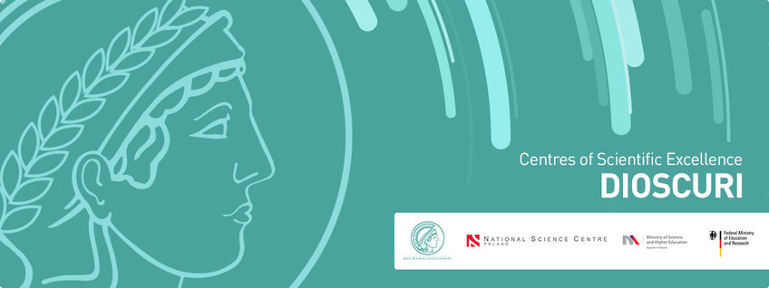

Current members of the Centre:
- Pawel Dlotko. Pawel is the director of the Centre. He is working in applied and computational topology. For more details please consult his linkedin profile.
- Niklas Hellmer. Niklas is a first year PhD student of the centre.
External members of the Centre:
- TBA
Recruitment
We are seeking highly talented and motivated individuals who are willing to work with us on applied problems for which the concept of shape is important.
We have a number of positions available. We are very open to host Marie Curie researchers as well as industrial collaborators.Please contact Pawel Dlotko for further details.
Acknowledgement
We gratefully acknowledge the support from the Dioscuri Program.
Dioscuri Centres of Scientific Excellence - a programme initiated by the Max Planck Society (MPG), jointly managed with the National Science Centre in Poland (NCN), and mutually funded by the Polish Ministry of Science and Higher Education (MNiSW) and the German Federal Ministry of Education and Research (BMBF).